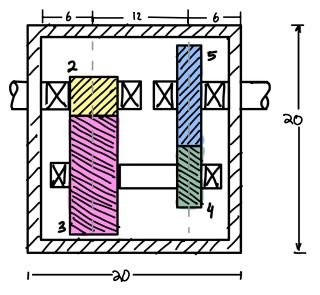

As a project for my Machine Design course, I was tasked to design a motorized data-aqcuisition cart. Since the design should consider any surfaces such as the moon, some specifications are restricted thus bringing the best out of each teams' creativity. My team, includes Andrew Romero, Ben Fong, and Bryan Roeper proposed such design.

Such specifications are minimum and maximum speed of 0.1 m/s and 1 m/s. It must be purely mechanical meaning no controller is allowed, and we were also given weight and cost limit.
We came up with a design consists of 2 motors, 2 gearboxes, 4 individual drive axles and 4 belts driven.
Although due to complexity and the lack of time available in a semester, we did not get to visualize our design with a prototype. It was a challenging yet fun project and I personally believe it would be better if the students have 2 semesters working on this project for prototype development.